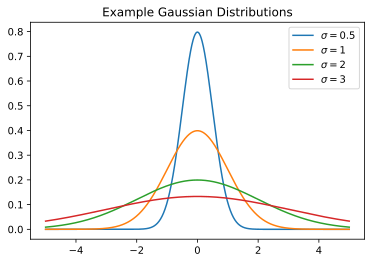
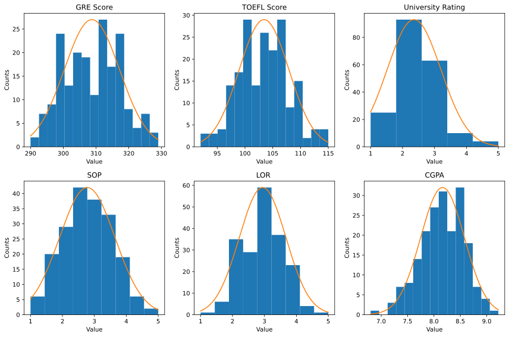

Week 6: Grad School Admissions And Gaussian Naive Bayes
Chris Tralie
The purpose of this exercise is to get you familiar with real-valued features and Gaussian Naive Bayes for modeling them. We'll use a graduate school admissions dataset from Kaggle as an example. Below is some code to load in this data
The data is in a 2D numpy arrays admit and notadmit, where each row holds a different student and each column holds a feature for that student (GRE Score, TOEFL score, Univeristy Rating, Statement of Purpose, Letter of Recommendation, Cumulative GPA).
Your job will be to do a leave one out classification; that is, loop through and pull out each of the examples in admit and notadmit, train Naive bayes classifiers on the remaining data for both the admit class and the nonadmit class, and see which model has a higher likelihood for the student you pulled out. Count how often you are correct based on the group you pulled out the student from.
Ethics Question
As you're doing this exercise, reflect on where this type of classification problem could come up, and what the ethical issues of automating it could be.
Gaussian Naive Bayes
Recall that for real-valued data, we can't use the same technique as we did for bag of words. Instead, we switch to a continuous distribution: the Gaussian
\[ p(x) = \frac{1}{\sqrt{2 \pi} \sigma} e^{-(x-\mu)^2 / (2 \sigma^2)} \]
There are two parameters here: the mean λ and the standard deviation σ. Let's plot a few distributions fixing μ at 0 and varying σ
As you can see, a larger standard deviation means that the distribution is wider.
Interestingly, the Gaussian is a realistic model for a lot of real data because of the central limit theorem. If we simply make μ be the sample mean
\[ \overline{X} = \frac{1}{N}\sum_{i = 1}^N x_i \]
and the standard deviation be the sample standard deviation
\[ \overline{\sigma} = \sqrt{\frac{1}{N}\sum_{i = 1}^N (x_i - \overline{X})^2} \]
Then we get a pretty good fit on the data above. The pictures below show the histogram of not admitted (blue) versus admitted (orange), and the fit of the Gaussians superimposed over them. What we see is while there is overlap between both distributions, the Gaussians are shifted to the left in the non admit distribution for every variable, which reflects the notion we have that doing better at any of these variables increases chances of being admitted.

In the Naive Bayes framework, if you treat every variable as being independent (which they certainly are not in the above data!), then we simply multiply together a bunch of Gaussians
\[ p(x | C) = \frac{1}{\sqrt{2 \pi} \sigma_{C1}} e^{-(x_1-\mu_{C1})^2 / (2 \sigma_{C1}^2)} \times \frac{1}{\sqrt{2 \pi} \sigma_{C2}} e^{-(x_2-\mu_{C2})^2 / (2 \sigma_{C2}^2)} \times ... \]
where (μCk, σCk) are the mean and standard deviation, respectively, of variable k under model C. If we take the log of this, we get a pretty nice expression
\[ \log p(x | C) = \log \frac{1}{\sqrt{2 \pi} \sigma_{C1}} -(x_1-\mu_{C1})^2 / (2 \sigma_{C1}^2) + \log \frac{1}{\sqrt{2 \pi} \sigma_{C2}} - (x_2-\mu_{C2})^2 / (2 \sigma_{C2}^2) + ...\]
Here, we can see clearly that the further a variable gets away from the mean of the Gaussian, the more negative the log likelihood will become for this model. So the maximum likelihood point is directly at the mean of each variable.
Histogram-Based Naive Bayes
If you finished early and are looking for things to do, you can try the same problem using histograms to represent discrete outcomes instead of fitting Gaussians.